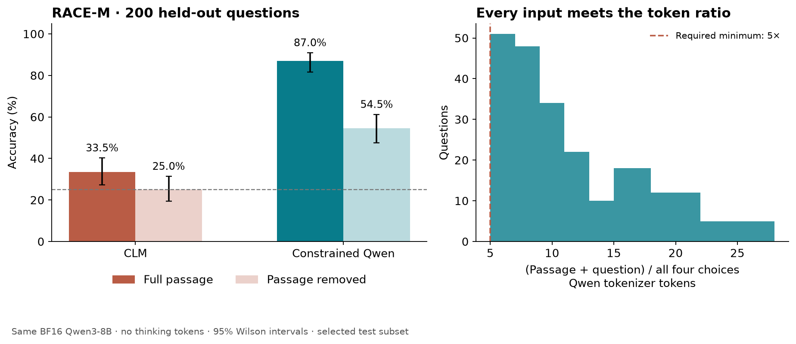

Local experiment · 2 October 2026
Short, useful context with a small action set
200 held-out RACE-M questions. Every passage plus question exceeds five times the token count of all four labeled choices combined. No document truncation, padding, extra reasoning tokens, or test-example selection based on correctness.
With full passages, constrained Qwen scored 87.0% and CLM scored 33.5%. Their paired difference is +53.5 percentage points (paired bootstrap 95% interval +46.0 to +61.0). Uniform random choice is 25%.
Accuracy and actual context use

The same questions and choices remain in the passage-removal control. The original gold answer is retained to measure how much information the passage supplies. Paired tests compare the identical 200 questions; exact McNemar p=2.109e-27. The bootstrap uses 10,000 paired resamples. These intervals describe this selected population and do not address training-data contamination.
Why this benchmark was selected
RACE is a reading-comprehension benchmark drawn from school English exams. Its middle-school subset tests much shorter passages than the previous long-document experiment. A separate 40-question development pilot qualified the benchmark before any test inference: Qwen answered 37/40 with the passage versus 27/40 without it. The predeclared acceptance rule required at least 70% accuracy and a gain of at least 15 percentage points. No test examples were retained or removed based on model performance.
The first pilot retained the earlier experiment's options-in-system layout and failed qualification: 24/40 with the passage versus 26/40 without it. A second, conventional layout placed passage, question, and then options together in the user message; it passed. This prompt selection was performed on development data only, before any test inference. Both pilot outputs are retained as original layout and standard layout. This substantial prompt effect limits general conclusions from the earlier long-context experiment; its numerical results remain valid for that specific prompt.
The test sample was frozen before the pilot ran. It uses one question per distinct passage, with no passage text overlap with the pilot. Eligible test pool: 1193 questions from 342 passages. Sampling and option-order seed: 20261003. This is a ratio-filtered RACE-M test subset, not an official full-benchmark result.
Token-budget audit
The numerator is the Qwen tokenizer count of the complete passage, two newlines, and question. The denominator is the larger of (a) the sum of the four raw answer-string token counts and (b) the token count of all four choices formatted as A/B/C/D lines. Shared system instructions are not credited to the evidence. Every case satisfies a strict ratio >5.
Latency on the actual 200 questions
These are one timed decision per method on each of 200 distinct inputs, with method order randomized per question; they are not repeated trials of one prompt. CLM action embeddings and the cached Qwen instruction prefix are prepared outside decision timing. The primary Qwen result processes the complete prompt including options on each call, with no precomputed prefix. Because options follow the passage in this layout, even the cached Qwen variant processes all option tokens on every call; only its common instruction prefix is cached. Model loading, HTTP serving and candidate setup are excluded. Tokenization, cache-copy work where applicable, inference and output selection are included; GPU outputs are materialized before stopping each timer.
For new action sets, CLM also paid a median 130.7 ms to embed the four actions separately. The median of action-setup time plus CLM decision time was 493.4 ms. This uses the reference harness's serial action setup, not an optimized batched action encoder. Qwen prefix setup took a median 78.2 ms. The cached Qwen variant scored 173/200, with 1 answer disagreements versus the uncached primary; BF16 numerical differences can change close decisions.
Option-order audit
Twenty test questions were selected before inference for reversal of all four options. Qwen scored 16/20 in the original randomized order and 17/20 after reversal, changing 3/20 answers. This audit does not replace the primary answers or ensemble them. CLM action scores are independently computed and permutation-equivariant.
Implementation and limitations
Both methods use the original BF16 Qwen/Qwen3-8B weights. CLM uses its released FP32 heads, original state/question serializer, normalized last-token pooling and checkpoint scaling. Qwen uses its original language-model output weights restricted to verified single-token option letters. Thinking is disabled and no explanation tokens are generated. Qwen's user message contains the passage, question, and then options; the system message asks for exactly one letter. No task-specific fine-tuning or few-shot examples are used.
A separate check of the first ten frozen test cases used the native Qwen model call with its full-vocabulary output projection. All ten restricted choices matched the primary optimized scoring path, and the unrestricted top token was an allowed option letter in every case. See native-forward validation. This check ran after all benchmark timing was finished.
MLX runs on an M4 Max with 64 GB unified memory and a process-local 24 GiB wired-memory limit. The inherited 1024-token prefill chunks preserve full context; these short prompts generally fit a single chunk. This is not an NVIDIA/vLLM speed measurement. Public RACE data may occur in model training; contamination was not audited. Selecting a benchmark where Qwen succeeds on development data was deliberate and does not establish superiority across all tasks. Both test methods use exactly the same selected evidence, questions and candidate text.
Artifacts and reproduction
Statistics · Every test prediction · Frozen test cases · Pilot qualification · Source hash and sample hashes · Runtime metadata
.venv/bin/python experiments/prepare_race_context.py
.venv/bin/python -u experiments/bench_race_context.py --original-pilot
.venv/bin/python -u experiments/bench_race_context.py
.venv/bin/python experiments/validate_race_output.py
.venv/bin/python experiments/analyze_race_context.py
The runner resumes existing logs. Preserve this results directory before a fresh replication. The source archive was downloaded from the authors' site and hashed in the manifest. RACE's stated terms are non-commercial research use; see the linked dataset page.